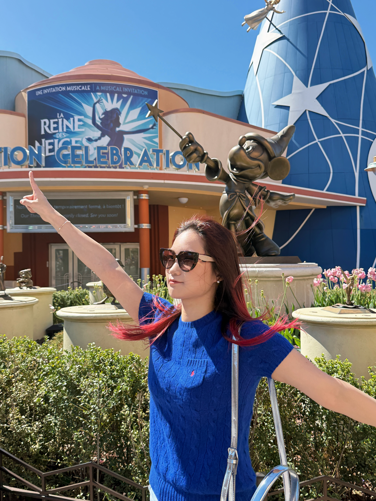
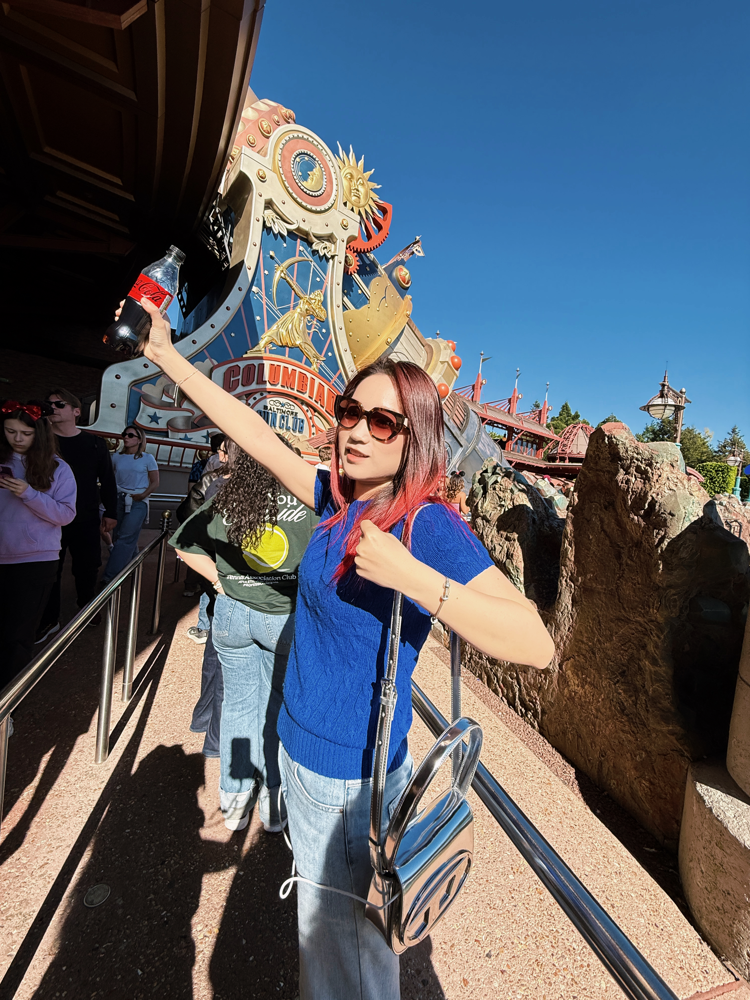

认真观察，
也尽兴生活。
我是刘润佳，关注用户体验与产品设计。从生活里的小细节出发，把好奇心变成问题，再把研究变成可以体验的设计。
一起聊聊设计 ↗RESEARCHER, THINKER &
我是刘润佳，关注用户体验与产品设计。从生活里的小细节出发，把好奇心变成问题，再把研究变成可以体验的设计。
一起聊聊设计 ↗
Keep your curiosity. ✴
A little adventure ↗Design for Change · 硕士
Programme Representative产品设计 · 本科
从产品实体到数字体验访谈、观察与主题分析
让设计决策有据可循项目策划实习生。参与行业与用户需求研究、案例分析和方案比较，将研究信息整理为项目需求与可视化表达。
在 Edinburgh Tool Library 与 Repair Café 开展田野观察与访谈，围绕 30 件真实物品，研究人们在修复、保留与放弃之间的决策。
通过 Workshop、半结构化访谈和行为观察，研究 10+ 位参与者的饮食认知与实际选择，将洞察转化为产品机会点。
擅长主题分析、用户画像、旅程地图与服务蓝图；能够从问题发现、需求提炼到原型表达，连接数字体验与实体产品。
(2024 — 2026)
tip：点击进入探索